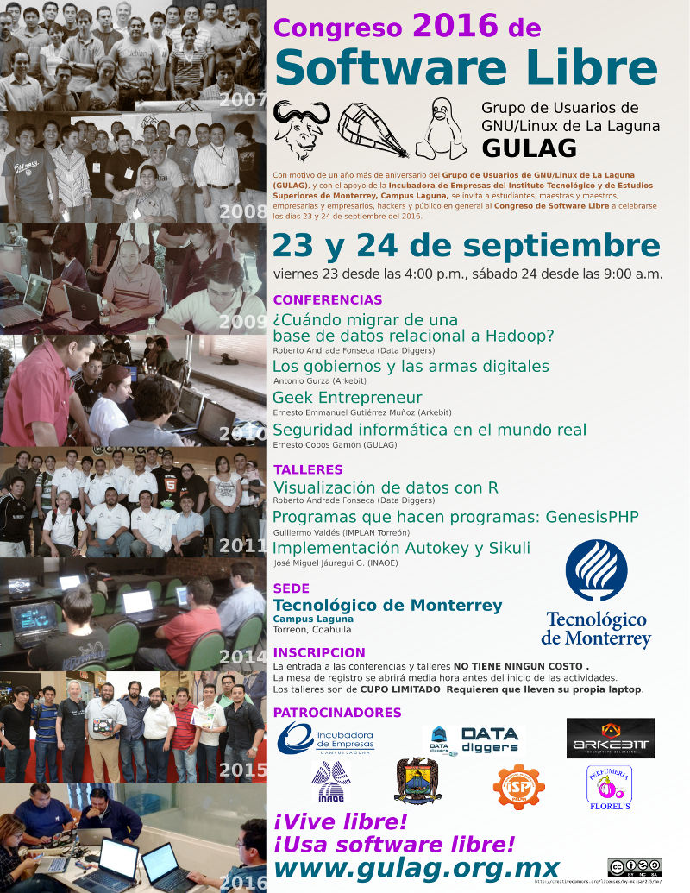
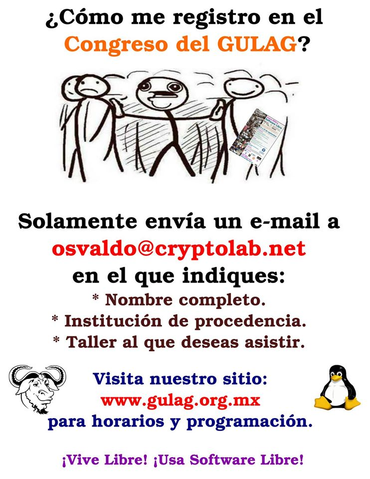

Atención PHPeros Laguneros.
Les invito al taller Programas que hacen programas: GénesisPHP que tratará sobre el sistema que su servidor ha desarrollado para hacer sistemas. No sé si les vaya a ser útil o no; pero puedo asegurarles que el taller tratará conceptos avanzados de nuestro lenguaje predilecto el PHP.
Para llegar a los conceptos propios de desarrollo de sistemas con GenesisPHP les solicitamos que sus laptops traigan instalado previamente GNU/Linux, Apache2, PHP5 y PostgreSQL8 o 9, sea como sistema operativo base o en virtualización. Así como el cliente GIT para bajar el software libre desde GitHub.
El terreno por descubrir en el desarrollo de aplicaciones es enorme, por lo que su apoyo en preparación de sus equipos nos brindará más tiempo para explorar y experimentar tanto con PHP como con GenesisPHP.
Para saber más y para descargar GenesisPHP visite https://github.com/guivaloz/GenesisPHP
Sede, fecha y lugar
- Tecnológico de Monterrey, Campus Laguna.
- Sábado 24 de septiembre 2016 a las 9 A.M.
- Las conferencias se realizaran en la SALA #1 planta baja edificio CCI.
- Salón #106 planta baja Edificio ETLAC (profesional).
Muchas gracias.
Última hora: Me informan que la cantidad de asistentes al taller a llegado a su límite. Aun así, pueden comunicarse a osvaldo@cryptolab.net para solicitar que el mismo taller se repita en una fecha futura.

